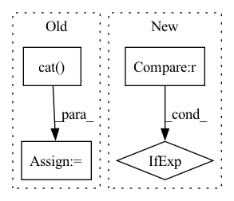

Pattern ID :23212
Before Change
// TODO do the same thing to the test targets in run_training, and maybe refactor
if args.dataset_type == "bert_pretraining":
mask = data.mask()
targets = torch.cat( targets, dim=0) .numpy().tolist()
for i in range(len(targets)):
if mask[i] == 1: // only predict ones masked out
targets[i] = NoneAfter Change
if args.dataset_type == "bert_pretraining":
// Only predict targets that are masked out
targets = [target if mask == 0 else None for target, mask in zip(targets, data.mask())]
preds = predict(
model=model,In pattern: SUPERPATTERN
Frequency: 5
Non-data size: 4
Instances Fragment ID: 73318879
Project Name: aamini/chemprop
Commit Name: 7ad74e35341f0eb65725ef7bba31198a85b1d324
Time: 2018-12-18
Author: swansonk.14@gmail.com
File Name: chemprop/train/evaluate.py
M Class Name: AnonimousClass
N Class Name: AnonimousClass
M Method Name: evaluate(5)
N Method Name: evaluate(5)
M Parent Class:
N Parent Class:
M File Name: chemprop/train/evaluate.py
N File Name: chemprop/train/evaluate.py
M Start Line: 70
M End Line: 76
N Start Line: 72
N End Line: 72
Before Change
// TODO: try residual connection
logits = self.out(torch.cat( (text_attn_feature, visual_attn_feature, audio_attn_feature), dim=1) )
return logits
After Change
text_emo_vecs_origin = self.textEmoEmbs(torch.LongTensor(list(range(self.num_classes))).to(self.device))
text_emo_vecs = text_emo_vecs_origin.unsqueeze(0).repeat(batch_size, 1, 1)
text_attn_weights = self.attention(output_text, text_emo_vecs)
logits = text_attn_weights if logits is None else logits + text_attn_weights
if "a" in self.modalities:
output_audio, _ = self.RNNs[1](X_audio) Fragment ID: 73318876
Project Name: wenliangdai/modality-transferable-mer
Commit Name: b0e565d11d6b3bf9f65fb1dcbdc8c641a2bc8054
Time: 2020-06-10
Author: wenliang.dai.1995@gmail.com
File Name: src/models/temp.py
M Class Name: EmotionEmbAttnModel
N Class Name: EmotionEmbAttnModel
M Method Name: forward(4)
N Method Name: forward(4)
M Parent Class: nn.Module
N Parent Class: nn.Module
M File Name: src/models/temp.py
N File Name: src/models/temp.py
M Start Line: 53
M End Line: 79
N Start Line: 70
N End Line: 96
Before Change
best_logp = logp_targets[0]
// concat blank_id
logp_targets = torch.cat(
(logp_targets, log_probs.view(-1)[0:1])
)
positions = torch.cat((positions + 1, blank.squeeze(1)))
// Extend hyp by selection
for j in range(logp_targets.size(0)):After Change
log_probs.view(-1), k=self.beam_size, dim=-1
)
best_logp = (
logp_targets[0]
if positions[0] != blank
else logp_targets[1]
)
// Extend hyp by selection Fragment ID: 73318890
Project Name: speechbrain/speechbrain
Commit Name: 17a7851375fa654da16a5828035f90f8eae334d6
Time: 2020-11-15
Author: ff936tw@gmail.com
File Name: speechbrain/decoders/transducer.py
M Class Name: TransducerBeamSearcher
N Class Name: TransducerBeamSearcher
M Method Name: transducer_beam_search_decode(2)
N Method Name: transducer_beam_search_decode(2)
M Parent Class: torch.nn.Module
N Parent Class: torch.nn.Module
M File Name: speechbrain/decoders/transducer.py
N File Name: speechbrain/decoders/transducer.py
M Start Line: 260
M End Line: 339
N Start Line: 260
N End Line: 337
Before Change
def forward(self, batch):
ptr = batch.ptr.clone()
pos_and_x = torch.cat( [batch.pos, batch.x], axis=1)
in_0 = (self.fc0(pos_and_x), batch.pos, batch.batch)
b1_out = self.block1(*in_0)
b1_out_decimated, ptr = decimate(b1_out, ptr, self.decimation)After Change
self.fc_classif = Linear(32, num_classes)
def forward(self, x, pos, batch, ptr):
x = x if x is not None else pos
b1_out = self.block1(self.fc0(x), pos, batch)
b1_out_decimated, ptr1 = decimate(b1_out, ptr, self.decimation) Fragment ID: 73318891
Project Name: ignf/myria3d
Commit Name: 4fbe77c32a422b6494cf6f0bde5539d8250df9c5
Time: 2022-11-28
Author: 11660435+CharlesGaydon@users.noreply.github.com
File Name: myria3d/models/modules/pyg_randla_net.py
M Class Name: PyGRandLANet
N Class Name: PyGRandLANet
M Method Name: forward(5)
N Method Name: forward(2)
M Parent Class: torch.nn.Module
N Parent Class: torch.nn.Module
M File Name: myria3d/models/modules/pyg_randla_net.py
N File Name: myria3d/models/modules/pyg_randla_net.py
M Start Line: 54
M End Line: 82
N Start Line: 59
N End Line: 86